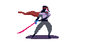
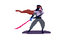

MaidenPink
Created using Adobe Photoshop, Wacom and Game Maker
Summary
In this cyber-fantasy setting, trying to make your way to Sanctuary is hard enough as it is, but for Daughter, it’s even harder after Mother gets hurt. Daughter has to learn how to take responsibility and fast, before Mother fades to dust! Navigate through different zones, help the Locals, and defeat the Final Boss in a top-down, action rpg, coming of age story. Your decisions along the way will affect your skills, so make sure to choose wisely!
Group members: Roxanne Henry, Yiyi Shao, Dikla Sinai
My responsibilities: Animation, Character Design
Full working diary can be found at here
Objective
The primary emotional cue of Maiden Pink is the relationship between mother and daughter. The game starts with the player being a little girl and traveling with her mother in a fantasy world. The mother is always protecting her child and won’t let the daughter away from her sight. However, the mother gets injured seriously at the end of the first level and can’t keep protecting the daughter through the journey, so the player as a little girl needs to be independent and learn skills and responsibility to save her mother. We all experienced the time that always being protected by our parents and the moment we have to learn to face the difficulties in life on our own. Women especially experiencing tremendous growth in independence. As the leading emotional cue reflects the life experience, the aesthetic style also needs to be emphasized to evoke the childhood memory and nostalgia emotion. Nostalgia can appeal to the audience on a sentimental and emotive level. Retro style graphics then becomes a more appropriate approach to achieve our primary goal. My own practice and experiments for our game Maiden Pink are trying different methods to create artworks in a retro style that bring the nostalgia-evoking stimuli. All the artworks for Maiden Pink are created in very small resolution (25 X 25 pixels) to mock the style of old games. Our artistic style are mostly inspired by Hyper Light Drifter.
Action

Daughter: The player character. She is small and timid, often depending on others for help and rescue. She is determined to become more responsible and independent. Daughter has a lot of love, respect and admiration for Mother.


 



Mother: Capable, brave, strong and reliable. Mother is a veteran in the post-apocalyptic world and has made it her priority to make sure Daughter is safe. She may have sheltered her too much, which she comes to regret after her injury.

The Boss: The final boss of the game. An old guardian of Sanctuary who’s programming has been corrupted. It takes the protection of Sanctuary a little too seriously. It is the final obstacle for Mother and Daughter to get through.


The Locals: These creatures are unique to each zone and can be pacified by puzzle solving. If you decide to do a combat route instead, these Locals are your primary enemy.


The Frog: The frogs are your friends. They will teach you a new skill. Frogs are very good at jumping, and they can teach you how to do that easily, as long as you complete the puzzle